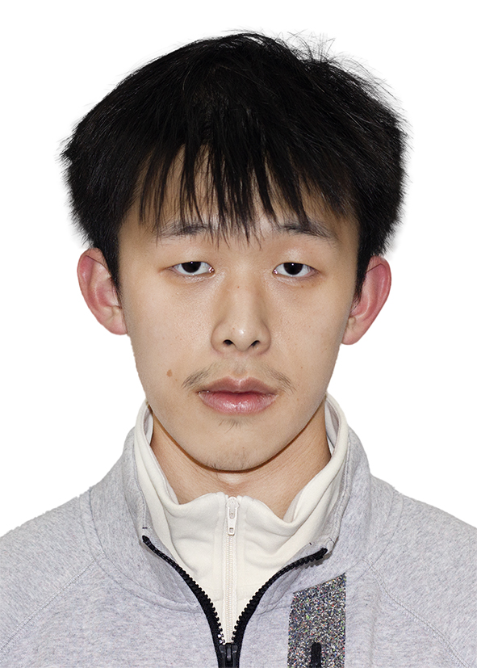

Undergraduate Student at UW-Madison | Mathematics and Computer Science

Welcome to my personal webpage. Here you can learn more about my academic interests, achievements, and hobbies.
I am particularly interested in geometry and theoretical computer science. Currently, I am focusing on the learning of algebraic geometry and computational complexity theory.
I have consistently participated in algorithm contests, such as the Olympiad in Informatics and the International Collegiate Programming Contest, since junior high school. During my three senior high school years, I won the national first prize each year.
I can play cello and piano proficiently. I started playing piano when I was 4-years-old, and cello 2 years ago.
I have been continuously participating in symphone or string orchastra as a cello player after I enter university. Now I am a cello player at university string orchastra.
In addition to my academic and musical interests, I enjoy swimming and playing badminton.
Email: huangwe10@yeah.net
GitHub: whuang369